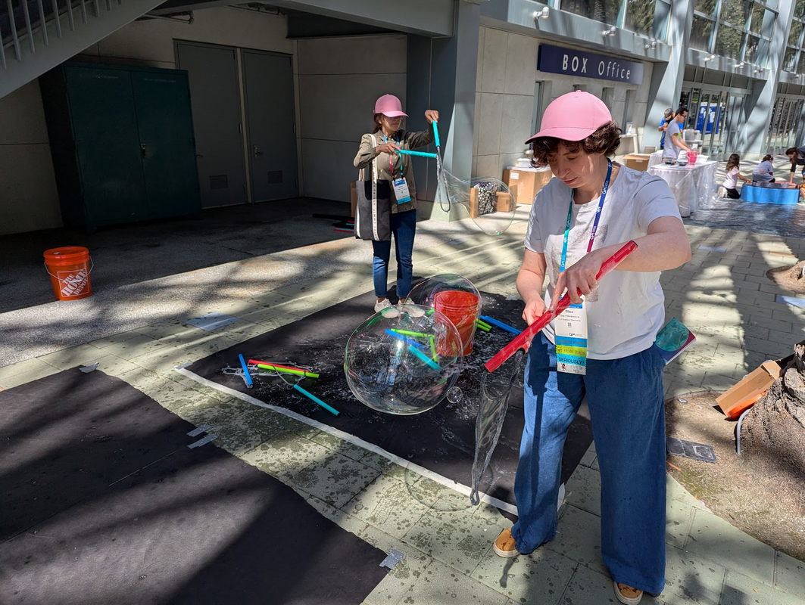
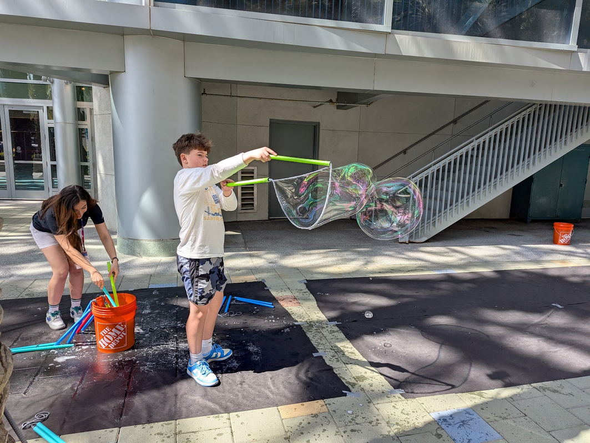
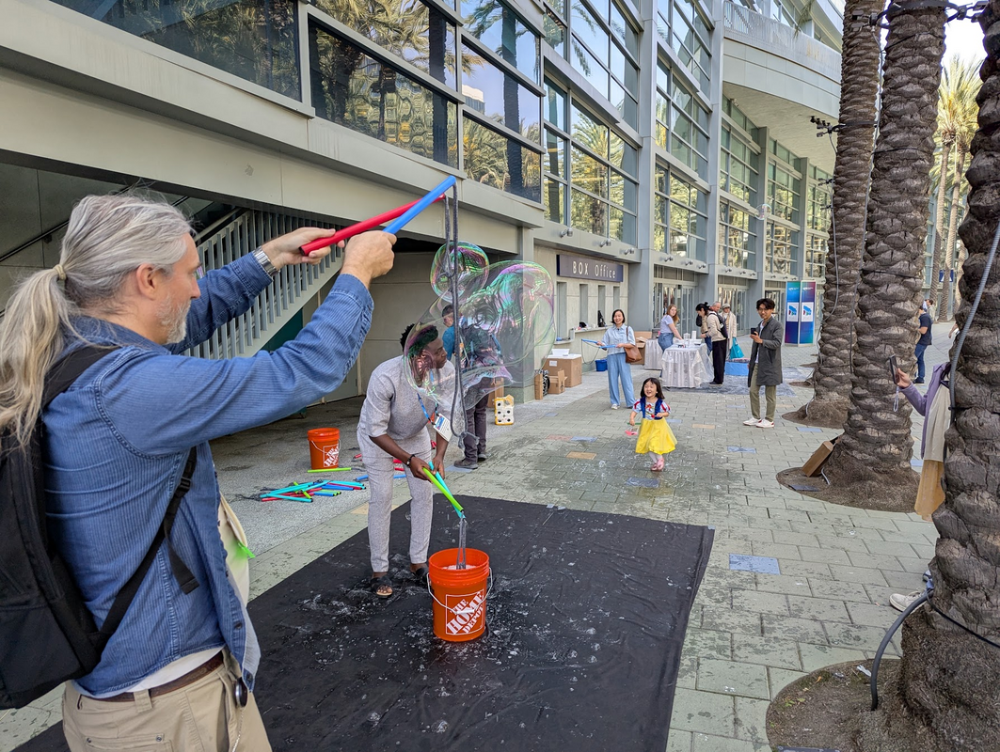
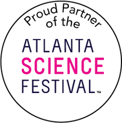

Squishy Science Sunday at the 2025 APS Global Physics Summit
Every year, several American Physical Society divisions (Soft Matter, Biological Physics, Statistical and Nonlinear Physics, and Polymer Physics) collaborate on Squishy Science Sunday. In 2025, we took part in Anaheim, CA, before the Global Physics Summit. The Burton Lab made 20 gallons of giant bubble juice for kids and adults to enjoy! More about Squishy Science Sunday.



Squishy Science Sunday video, 2024 APS March Meeting
A video made by Jing (Michelle) Wang for Squishy Science Sunday at the 2024 APS March Meeting.
Physics Live! at the Atlanta Science Festival

Ever play with giant soap bubbles, ride a hovercraft, or taste liquid nitrogen ice cream? How about journey through space and time as you gaze at the stars? Now you can with Physics Live! Every year during the Atlanta Science Festival, the faculty and students of Emory’s Department of Physics host Physics Live!, an afternoon and evening of hands-on science: loads of demonstrations (K-12 encouraged), planetarium shows (limited seating, tickets available on arrival), and laboratory tours (research in action!).


Emory Science Club at Laurel Ridge Elementary
Once a month the Burton Lab visits Laurel Ridge Elementary School in DeKalb County to volunteer at an after-school science club for 4th and 5th grade students. Activities include building DC motors, playing with light and sound, and many other demonstrations focused on fundamental science. Sometimes we get a little too excited with liquid nitrogen! In 2026, CBS News Atlanta joined us on the playground for a story about the club.